Candidate List 20260302 Previous Day Next Day Section 1: New Sources (age<1d) Cosmological Afterglow
Section 2: Old (1-5d) sources observed last night placeholder
Section 1: New Afterglow/FBOT Cands Last Night (0)
Section 2: Older Sources Observed Last Night (15)
0. ZTF26aahixfn (FBOT?) [Back to Top] [Share] [Trigger Swift] [Fritz ] [Lasair ]RA, Dec: 172.7169, 20.28023 11h30m52.06s, 20d16m48.84sGalactic (l, b): 229.00642, 70.35733 ext(g-r) = 0.023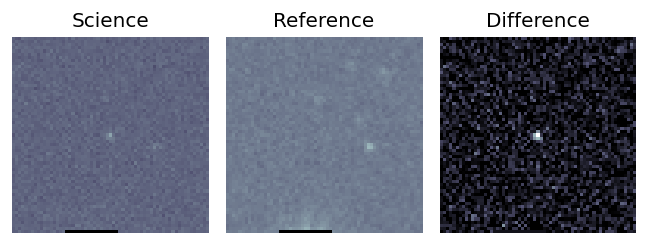
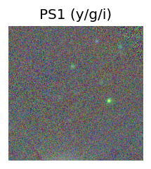
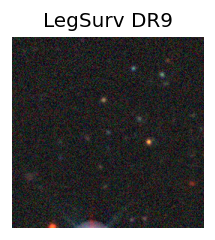
LegacySurvey: 1 sources in 3 arcsec Closest: d = 0.19 arcsec, 226.9 deg (east of north) photoz=0.76 (68% bounds 0.48, 1.05), type=REX peak abs mag = -24.77 (68% bounds -23.55, -25.61) 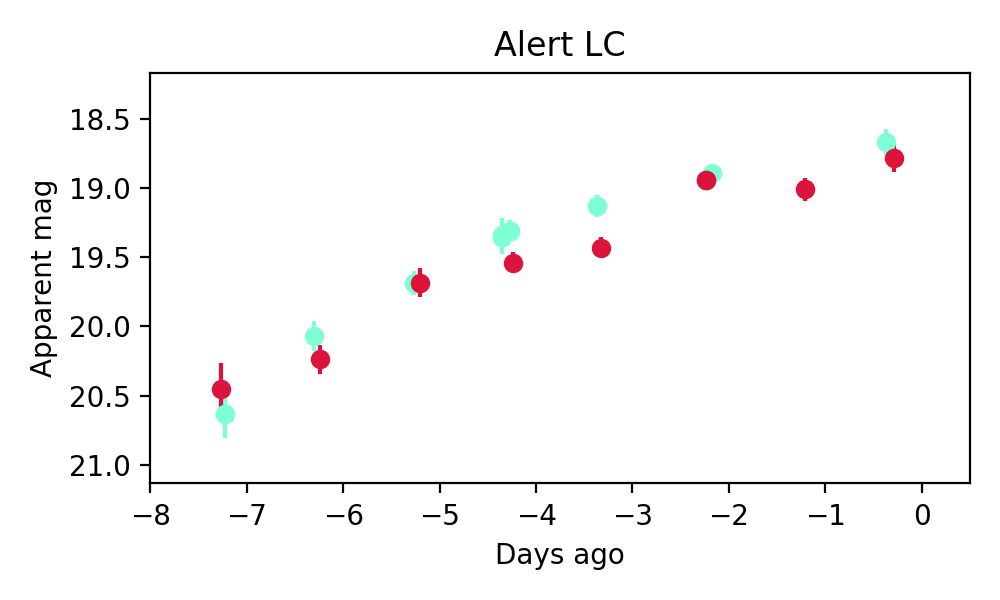
1. ZTF26aahqsvy (Afterglow?FBOT?) [Back to Top] [Share] [Trigger Swift] [Fritz ] [Lasair ]RA, Dec: 203.11577, 8.72716 13h32m27.78s, 8d43m37.77sGalactic (l, b): 332.63817, 69.19806 ext(g-r) = 0.027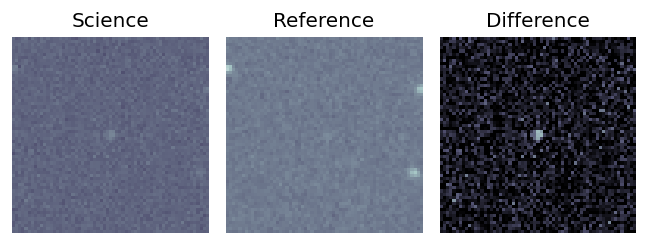
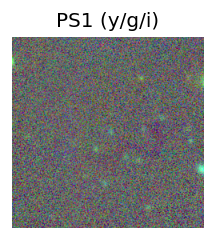
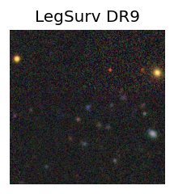
peak abs mag = -21.93 LegacySurvey: 1 sources in 3 arcsec Closest: d = 0.48 arcsec, 236.3 deg (east of north) photoz=0.15 (68% bounds 0.09, 0.27), type=REX peak abs mag = -19.77 (68% bounds -18.72, -21.25) 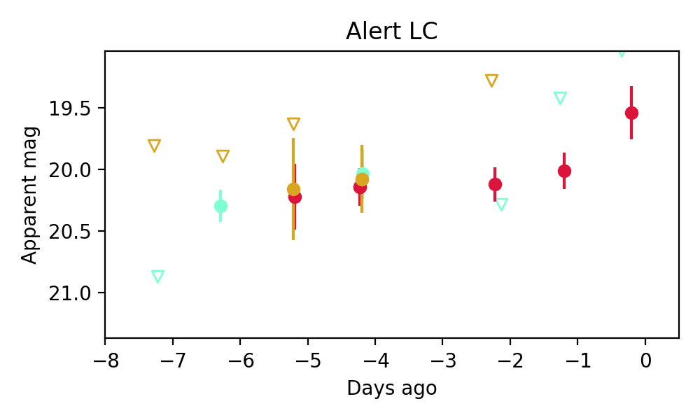
Consistent with synchrotron, g-r>0!
2. ZTF26aahyyny (FBOT?) [Back to Top] [Share] [Trigger Swift] [Fritz ] [Lasair ]RA, Dec: 120.84859, 8.29048 8h 3m23.66s, 8d17m25.73sGalactic (l, b): 213.60298, 19.73908 ext(g-r) = 0.019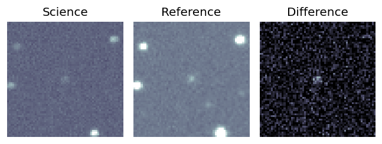
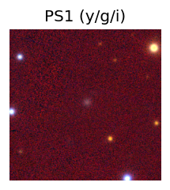
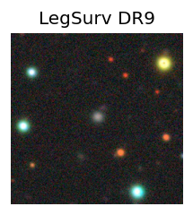
peak abs mag = -20.98 LegacySurvey: 1 sources in 3 arcsec Closest: d = 0.69 arcsec, 328.1 deg (east of north) photoz=0.19 (68% bounds 0.15, 0.23), type=REX peak abs mag = -21.91 (68% bounds -21.3, -22.35) 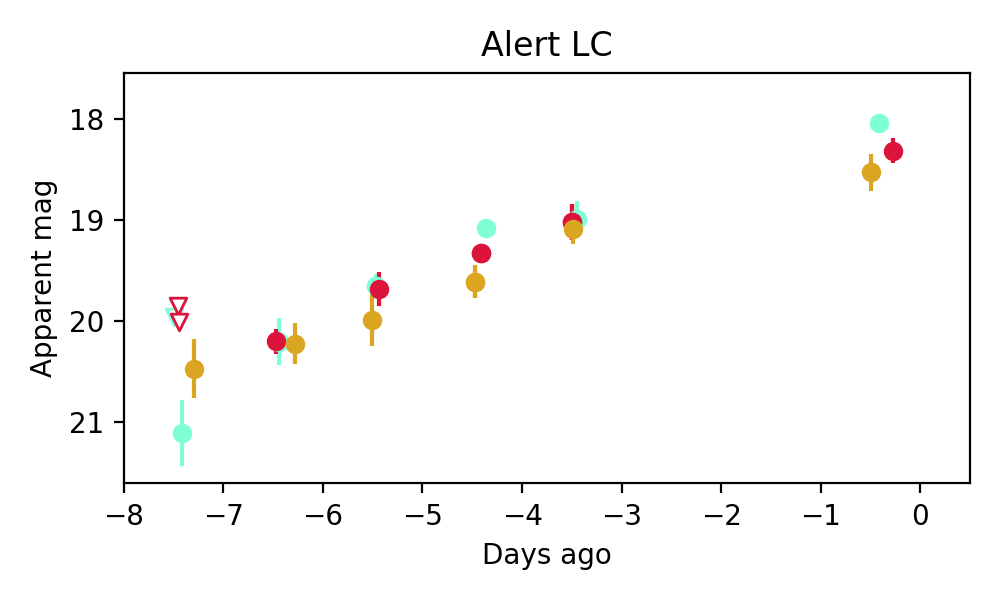
3. ZTF26aaicwuu (FBOT?) [Back to Top] [Share] [Trigger Swift] [Fritz ] [Lasair ]RA, Dec: 174.77423, 23.75924 11h39m5.82s, 23d45m33.27sGalactic (l, b): 220.57913, 73.34124 ext(g-r) = 0.023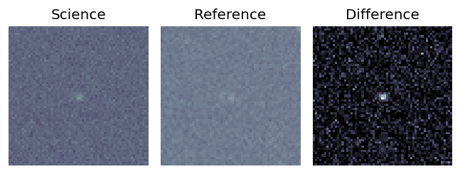
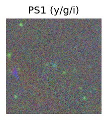
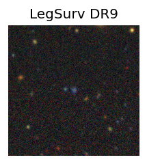
peak abs mag = -20.94 LegacySurvey: 1 sources in 3 arcsec Closest: d = 0.28 arcsec, 277.9 deg (east of north) photoz=0.11 (68% bounds 0.06, 0.76), type=REX peak abs mag = -19.65 (68% bounds -18.48, -24.52) 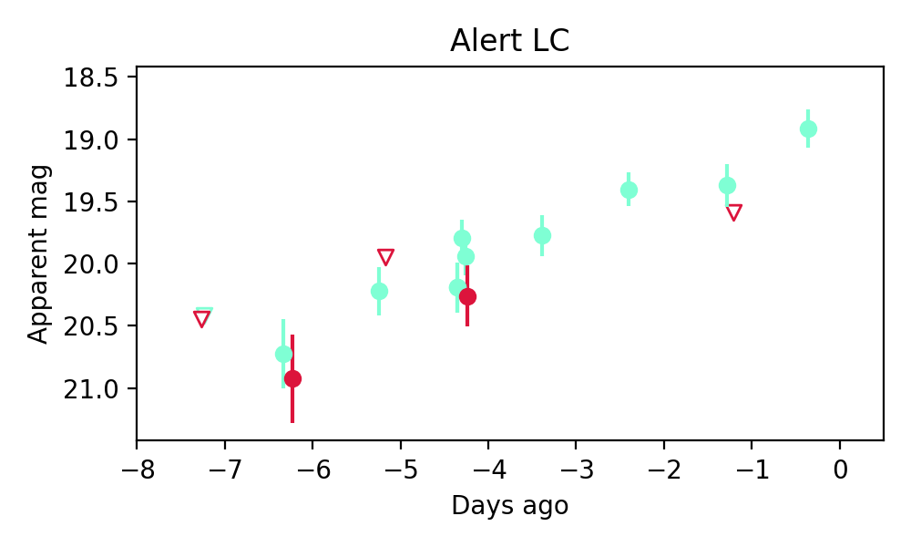
4. ZTF26aaiefpj (Afterglow?) [Back to Top] [Share] [Trigger Swift] [Fritz ] [Lasair ]RA, Dec: 292.86136, 43.7371 19h31m26.73s, 43d44m13.54sGalactic (l, b): 76.31683, 11.74534 ext(g-r) = 0.113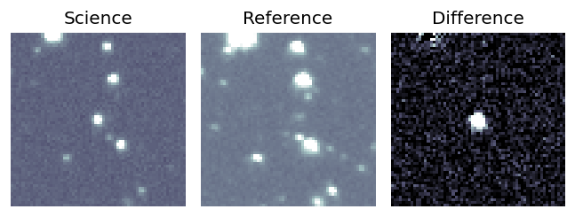
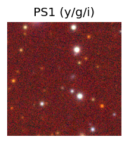
PS1: 1 source in 3 arcsec Closest: d = 4.52 arcsec photoz=0.19+/-0.07 peak abs mag = -23.44 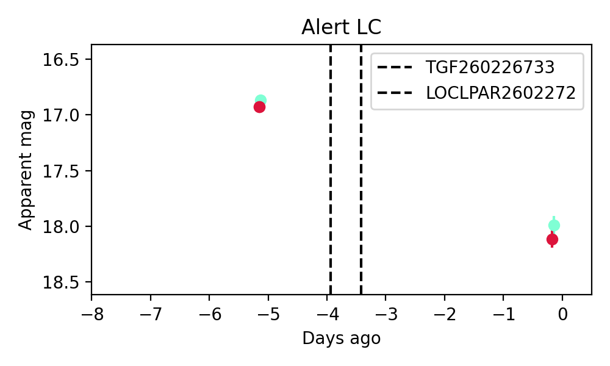
5. ZTF26aaijdek (Afterglow?) [Back to Top] [Share] [Trigger Swift] [Fritz ] [Lasair ]RA, Dec: 128.33008, 29.84695 8h33m19.22s, 29d50m49.02sGalactic (l, b): 193.72147, 33.98022 ext(g-r) = 0.043LegacySurvey: 1 sources in 3 arcsec Closest: d = 4.60 arcsec, 275.7 deg (east of north) photoz=0.15 (68% bounds 0.1, 0.32), type=EXP peak abs mag = -20.33 (68% bounds -19.5, -22.24) Consistent with synchrotron, g-r>0!
6. ZTF26aailobf (Afterglow?FBOT?) [Back to Top] [Share] [Trigger Swift] [Fritz ] [Lasair ]RA, Dec: 246.37293, 13.92107 16h25m29.50s, 13d55m15.85sGalactic (l, b): 29.33454, 38.56309 ext(g-r) = 0.049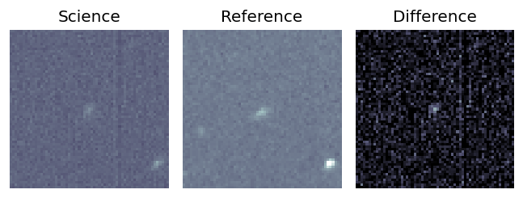
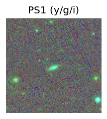
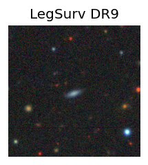
peak abs mag = -20.14 LegacySurvey: 1 sources in 3 arcsec Closest: d = 1.51 arcsec, 171.3 deg (east of north) photoz=0.06 (68% bounds 0.04, 0.1), type=EXP peak abs mag = -17.59 (68% bounds -16.69, -18.96) 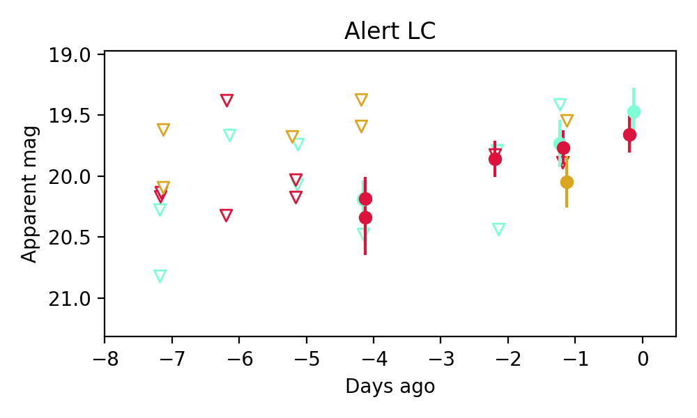
Consistent with synchrotron, g-r>0!
7. ZTF26aaixbao (Afterglow?) [Back to Top] [Share] [Trigger Swift] [Fritz ] [Lasair ]RA, Dec: 79.69971, 6.59409 5h18m47.93s, 6d35m38.72sGalactic (l, b): 195.86775, -17.17857 ext(g-r) = 0.218
8. ZTF26aaiyyzd (FBOT?) [Back to Top] [Share] [Trigger Swift] [Fritz ] [Lasair ]RA, Dec: 221.75325, 19.11236 14h47m0.78s, 19d 6m44.50sGalactic (l, b): 22.28674, 62.31902 ext(g-r) = 0.038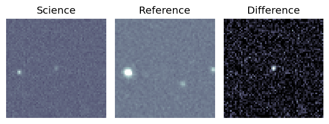
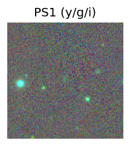
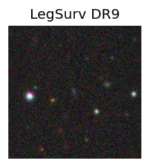
peak abs mag = -21.39 LegacySurvey: 1 sources in 3 arcsec Closest: d = 0.46 arcsec, 68.4 deg (east of north) photoz=0.14 (68% bounds 0.09, 0.37), type=EXP peak abs mag = -19.83 (68% bounds -18.81, -22.15) 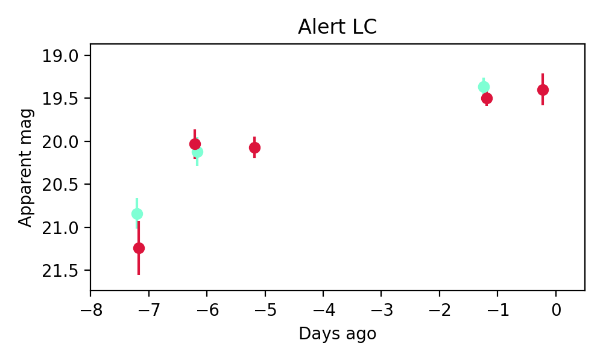
9. ZTF26aajdevg (FBOT?) [Back to Top] [Share] [Trigger Swift] [Fritz ] [Lasair ]RA, Dec: 94.73033, 1.00502 6h18m55.28s, 1d 0m18.09sGalactic (l, b): 208.30653, -6.76696 ext(g-r) = 0.551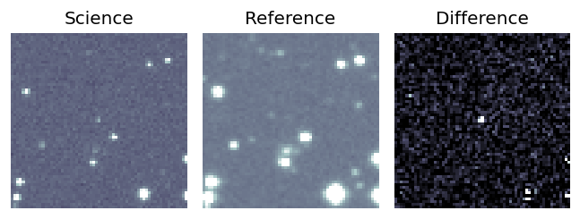
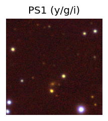
peak abs mag = -21.92 PS1: 1 source in 3 arcsec Closest: d = 7.11 arcsec photoz=0.68+/-0.26 peak abs mag = -24.77 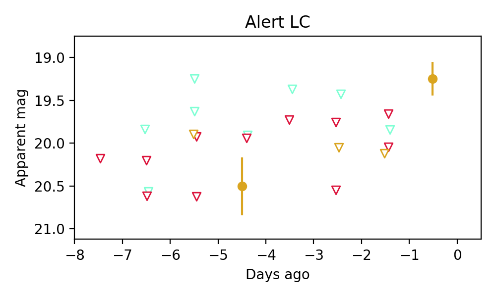
10. ZTF26aajdqbk (Afterglow?) [Back to Top] [Share] [Trigger Swift] [Fritz ] [Lasair ]RA, Dec: 145.17124, -16.83631 9h40m41.10s, -16d-50m-10.72sGalactic (l, b): 250.86044, 26.19054 ext(g-r) = 0.069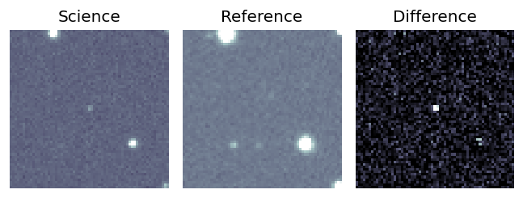
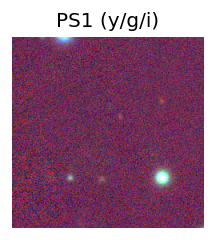
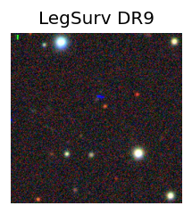
LegacySurvey: 1 sources in 3 arcsec Closest: d = 5.76 arcsec, 322.9 deg (east of north) photoz=0.47 (68% bounds 0.29, 0.74), type=PSF peak abs mag = -23.58 (68% bounds -22.31, -24.77) 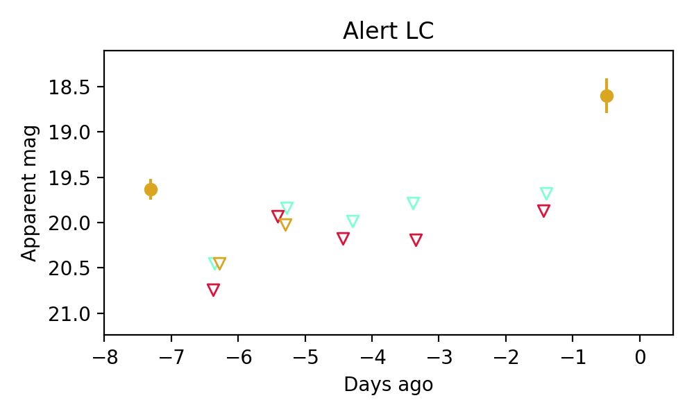
11. ZTF26aajeyiv (Afterglow?FBOT?) [Back to Top] [Share] [Trigger Swift] [Fritz ] [Lasair ]RA, Dec: 112.48268, 18.20232 7h29m55.84s, 18d12m8.36sGalactic (l, b): 200.55095, 16.48533 WARNING: -3.59 deg from ecliptic plane ext(g-r) = 0.06peak abs mag = -18.17 LegacySurvey: 1 sources in 3 arcsec Closest: d = 1.66 arcsec, 296.5 deg (east of north) photoz=0.16 (68% bounds 0.1, 0.24), type=SER peak abs mag = -20.17 (68% bounds -19.16, -21.18) Consistent with synchrotron, g-r>0!
12. ZTF26aajfdxt (Afterglow?) [Back to Top] [Share] [Trigger Swift] [Fritz ] [Lasair ]RA, Dec: 182.86712, 29.2443 12h11m28.11s, 29d14m39.47sGalactic (l, b): 197.09108, 80.94527 ext(g-r) = 0.019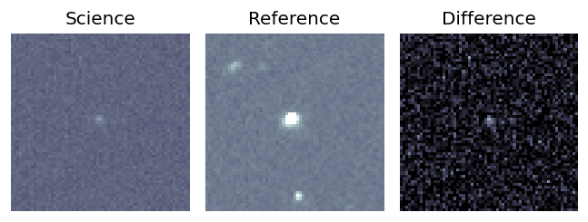
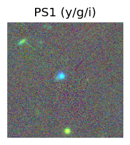
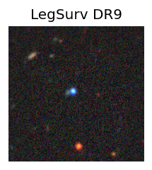
LegacySurvey: 1 sources in 3 arcsec Closest: d = 2.35 arcsec, 51.8 deg (east of north) photoz=0.01 (68% bounds 0.01, 0.02), type=PSF peak abs mag = -14.63 (68% bounds -13.58, -15.45) 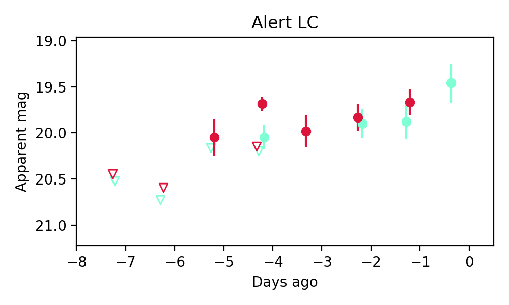
Consistent with synchrotron, g-r>0!
13. ZTF26aajgrce (FBOT?) [Back to Top] [Share] [Trigger Swift] [Fritz ] [Lasair ]RA, Dec: 184.28258, 8.74097 12h17m7.82s, 8d44m27.49sGalactic (l, b): 277.52942, 69.90238 ext(g-r) = 0.02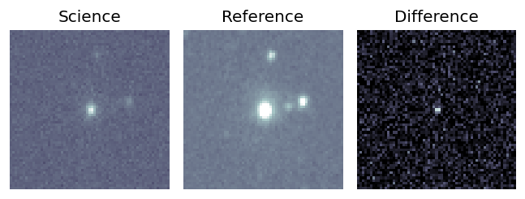
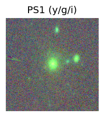
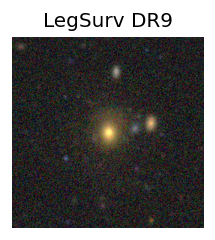
LegacySurvey: 1 sources in 3 arcsec Closest: d = 0.38 arcsec, 243.4 deg (east of north) photoz=0.21 (68% bounds 0.21, 0.22), type=SER peak abs mag = -19.81 (68% bounds -19.75, -19.88) 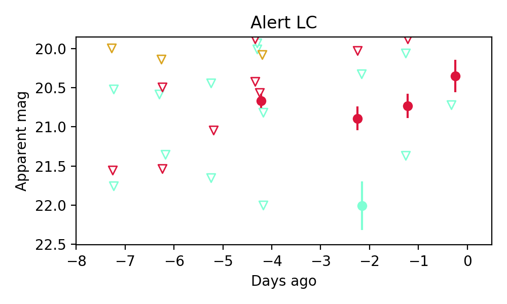
14. ZTF26aajgwnf (FBOT?) [Back to Top] [Share] [Trigger Swift] [Fritz ] [Lasair ]RA, Dec: 152.27922, 68.47393 10h 9m7.01s, 68d28m26.14sGalactic (l, b): 141.73953, 42.23701 ext(g-r) = 0.049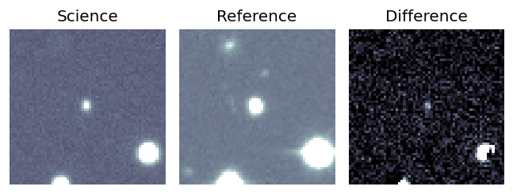
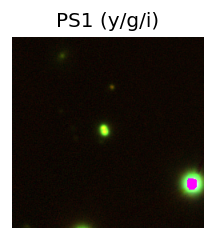
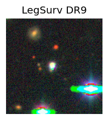
LegacySurvey: 1 sources in 3 arcsec Closest: d = 1.11 arcsec, 100.5 deg (east of north) photoz=0.15 (68% bounds 0.13, 0.17), type=PSF peak abs mag = -20.69 (68% bounds -20.4, -21.04) 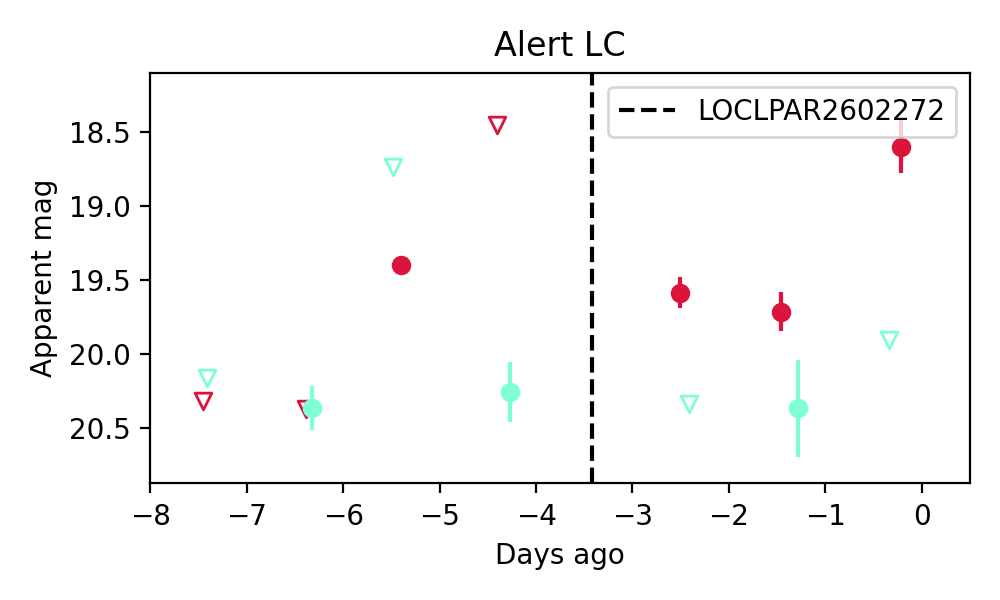